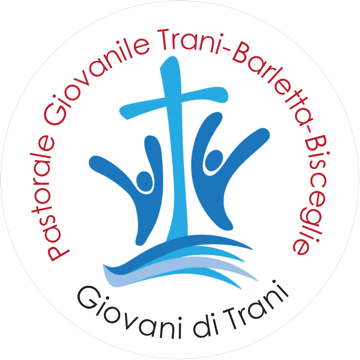

Tutte le città

PG Trani
Pastorale Giovanile di Trani
Calendario 2026/27
Aggiungilo al tuo telefono
2025/26
Festa degli Oratori
3 luglio 2026 · Villa Comunale
Notte prima degli esami
Preghiera con i maturandi · 17 giugno 2026